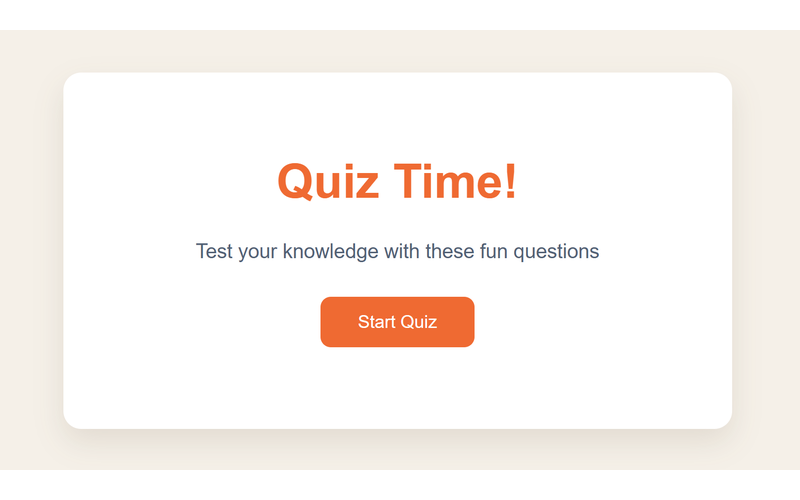
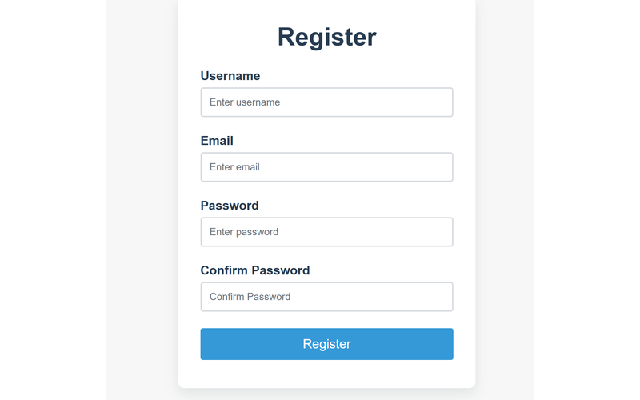
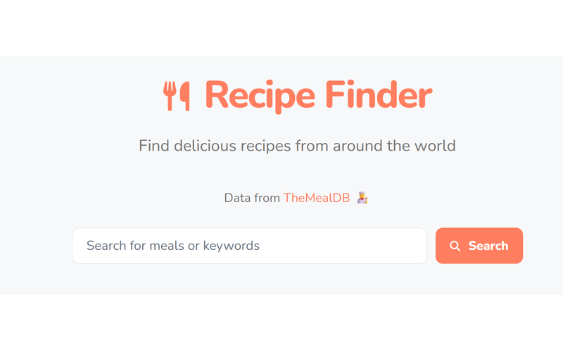

Web 开发课程 · 前端作品集
你好，我是孟雨航
计算机科学与技术专业。这里是我这学期前端课程里完成的三个小项目， 全部用 HTML / CSS / JavaScript 手写实现，并部署上线，点击卡片就可以访问。
- 03上线项目
- 3 门课程作业
- Vercel在线部署

Quiz Time
在线答题小应用：从题库里轮流出题、即时判分，最后给出得分总结，练习 JS 的状态管理。
访问项目 →
Register Form
注册表单页面：用户名、邮箱、密码的格式校验和错误提示，重点练习表单交互与样式细节。
访问项目 →
Recipe Finder
食谱搜索应用：接入 TheMealDB 公开接口，按关键词实时搜索菜品并查看做法详情。
访问项目 →